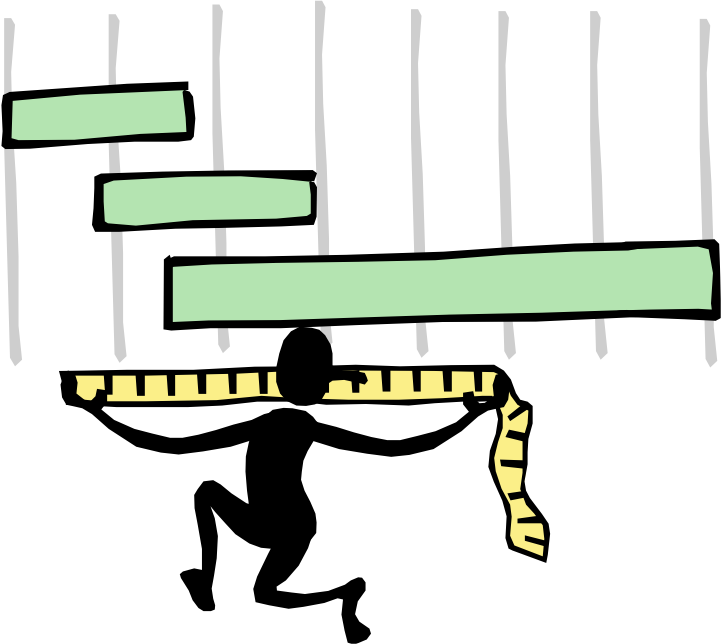

Indicators
IN2004B: Generation of Value with Data Analytics
Department of Industrial Engineering
Agenda
- Basic Indicator Concepts
- Lagging and Leading Indicators
Basic Indicator Concepts
Management
“Management is the process by which an environment is designed and maintained in which individuals working in groups effectively accomplish specific goals.”
Koontz, Harold, “Management,” 14th Edition, McGraw Hill, 2012
Functions of management
The management process is broken down into five management functions:
- Plan: Choosing missions and objectives, and the actions to achieve them.
- Organizing: Establishing an intentional structure of roles for people to perform in an organization.
- Staffing: Filling and maintaining positions in the organizational structure.
- Directing: Influencing people to contribute to organizational and group goals.
- Controlling: Measuring and correcting individual and organizational performance to ensure that events conform to plans.
Integration of planning and control

Planning
As a result of the planning process, some of the following types of plans can be generated:
- Strategies. Approaches or plans to achieve objectives, which are specific and measurable.
- Procedures. These detail the execution of an activity.
- Programs. Organized sets of activities to achieve objectives.
- Budgets. Detailed financial plans to facilitate economic decision-making.
High need to measure progress
Planning
As a result of the planning process, some of the following types of plans can be generated:
- Strategies. Approaches or plans to achieve objectives, which are specific and measurable.
- Procedures. These detail the execution of an activity.
- Programs. Organized sets of activities to achieve objectives.
- Budgets. Detailed financial plans to facilitate economic decision-making.
High need to measure progress
Definition of SMART Objectives
Specific: An objective should be clear and specific, avoiding ambiguity. It should answer the questions what, who, when, where, and why.
Measurable: An objective should be quantifiable or at least evaluable to determine progress and success. It should be possible to measure it with tangible indicators or criteria.
Achievable: A goal should be realistic and achievable, considering available resources, time, and necessary skills.
Relevant: A goal should be relevant and aligned with the broader goals of the organization or individual.
Time-bounded: A goal should have a clearly defined timeframe or deadline.
Examples
Example 1:
Objective: Complete staff training.
SMART: Complete at least 90% of the 2014 training program for all company operating personnel by November 30 of this year.
Example 2
Objective: Increase sales by 20%.
SMART: Achieve a sales increase of product X of at least 20% by the end of the first half of 2015, while maintaining a profitability for the company of at least 5%.
The need to measure
To carry out the Planning, Implementation, and Control processes, we need an information system to evaluate whether the planned objectives are being achieved and whether the implemented actions are being carried out in accordance with the plans.
What is an indicator?
“It is the result of a quantitative or qualitative measurement, or some other criterion, by which the performance, efficiency, achievement, etc., of a person or organization can be evaluated, often compared to a standard or goal.”
Collins English Dictionary.
What is an indicator?
“The qualitative and/or quantitative information on an examined phenomenon (or a process, or a result), which makes it possible to analyze its evolution and to check whether quality targets are met, driving actions and decisions.”
Franceschini, Fiorenzo & Galetto, Maurizio & Maisano, Domenico. (2007). Management by Measurement: Designing Key Indicators and Performance Measurement Systems. 10.1007/978-3-540-73212-9.
Examples of indicators

Operating income: Profit generated from day-to-day operations.


Characteristics of an indicator
Fundamental:
Validity: The indicator must accurately reflect the actual behavior of the phenomenon, variable, result, etc., to be measured.
Stability: The indicator must be defined, calculated, and interpreted in the same way over time (allowing for comparisons and observing trends).
Ideal:
- Simple and easy to interpret.
- Able to indicate trends over time.
- Sensitive to changes within and outside the organization.
- Easy to collect and process data.
- Quick and easy to update.
Usefulness of indicators

Dimensions of analysis
Indicators and the data that drive them are often stratified with respect to other variables.
Variables used as stratification criteria are called “Analysis Dimensions” (they are dimensions from the perspective of data).
Example: In a sales process, monthly sales can be stratified by distribution channel, region of the country, product family, etc., for analysis and visualization purposes.
For example

Lagging and Leading Indicators
Selecting indicators
Selecting indicators is a critical factor for an organization to move closer to fulfilling its mission and turning its strategies into reality. Indicators and strategies are inextricably linked.
A strategy without indicators is useless; indicators without a strategy are irrelevant!
Two main types of indicators
A lagging indicator measures the outcome of performance at the end of a period. It is backward-looking because it shows us the consequences of what has already been done. They are also known as result indicators.
A leading indicator measures the performance of factors that are critical now to achieving a desired outcome in the future. They are also known as leading indicators.
Lagging Indicator
Goal: Measures the outcome of performance at the end of a period.
Example: Annual sales, market share, ROI.
Advantage: They are objective and easy to define.
Disadvantage: They reflect the effect of past actions and tend to be expensive to calculate.
Leading Indicator
Goal: Measures processes, activities, behaviors that tend to change during the process to capture particular patterns or trends.
Example: # of customers visited, # of courses offered
Advantage: They are predictive, allowing for strategy corrections. They tend to be cheaper to calculate.
Disadvantage: You hope they help you to predict lagging indicators assuming a cause-and-effect relationship.
Other examples
In the context of a YouTuber:
Leading indicator: Number of views in the first 24 hours after a video is published.
Lagging indicator: Total monthly monetization revenue after the month closes.
In the context of Netflix’s sales department:
Leading indicator: Number (or conversion rate) of users starting a free trial during the month.
Lagging indicator: Annual subscription revenue after the fiscal year ends.
In the context of a GenAI company:
Leading indicator: Leading indicator: Average response time to customer service requests during the month.
Lagging indicator: Number (or proportion) of positive Google Maps reviews posted after service completion.
In the context of a mini-split maintenance company:
Leading indicator: Average response time to service requests during the month.
Lagging indicator: Monthly number of positive customer reviews after service completion.
More on indicators
Lagging indicators measure outcomes after they occur and are used to evaluate performance. Leading indicators are observed earlier in the process and are used to anticipate future outcomes.
What is an outcome? It is the realized result of a process after uncertainty has resolved.
- The value is known
- The value is final for that time window
- No further operational decisions can change it
In practice, leading indicators are often cheaper and faster to compute because they rely on partial or proxy information.
The goal in analytics is to identify leading indicators that can reliably predict key lagging indicators.
Importantly, the same variable (e.g., sales) can act as a leading or lagging indicator depending on its time resolution and decision context.
Leading indicators help you act; lagging indicators help you assess.
How do I define an indicator?
Selection criteria:
Direct relationship with the objective to be measured
Ease of communication focused on the strategy
Repeatability and reliability
Update frequency
Usefulness in goal setting
Usefulness in assigning responsibilities
Usefulness for downward deployment
Basic and Derived Indicators
A basic indicator is obtained from the direct measurement of a phenomenon or fact. For example: Number of orders delivered completely and on time during the week.
A derived indicator combines the information from two or more basic or derived indicators. For example: Percentage of orders delivered completely and on time during the week.
Example 1: In the context of a store.
Basic indicator: Number of customers who made a purchase today.
Derived indicator: Daily conversion rate = (Number of customers who made a purchase) / (Number of customers who visited the store).
Example: In the context of online content performance
Basic indicators: Number of page views, Number of clicks, Time spent on the page.
Derived indicators:
Click-through rate (CTR) = Clicks / Page views.
Average time per visit = Total time / Number of visits.
The format of an indicator
An indicator should be measured numerically using:
Absolute Numbers: Results of a measurement or counting process (volume produced, share price, number of employees, fixed costs, etc.)
Rates: Relationship between two variables with different units (number of units / number of workers, energy consumption / liters produced, etc.)
Indexes: Dimensionless quantity resulting from dividing the current value of a variable by a reference base value for that variable (consumer price index)
Proportions: Relationships between two variables measured in the same units (men vs. women, admitted vs. rejected)
Growth or Decrease Percentages: (Current Value – Previous Value)*100/Previous Value.
Evaluations: Evaluations of a qualitative variable on a Likert-type ordinal scale (low, medium, high, terrible, bad, average, good, excellent).
Activity 1.1 (cooperative mode)
For the following concepts, propose one leading and one lagging (basic and derived) quantitative indicators:
Monthly productivity of a furniture production line
Annual staff turnover in a manufacturing company
Customer service level of a company that manufactures plastic packaging and delivers regionally
Business profitability for a medium-sized wholesale grocery company
Performance of the fundraising process of an association supporting homeless children
Mention how the leading indicator can help predict the lagging indicator.
Remember that…
The purposes of an indicator are:
Establish quantitative goals.
Organizational motivation, induction of desirable behaviors.
Strategy evaluation and strategic learning.

Return to main page

Tecnologico de Monterrey